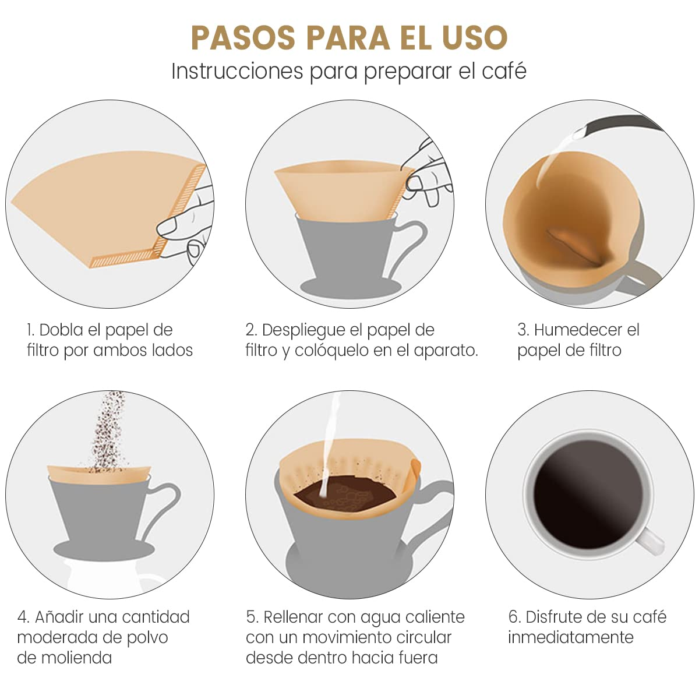

Paso a paso y recetario
Paso a paso para el uso de cafe de filtro
- Seleccionar un dripper según preferencias.
- Disponemos de varios tipos de filtros de papel en base al dripper elegido
- Definir la receta: cantidad de café, agua y tiempo de extracción.
- Moler el café y colocarlo en el filtro.
- Por ultimo, verter agua y seguir la receta. ¡A disfrutar!

Cuadro de recetas
¡En este recetario solo sera posible asignar un id unico, es decir si ya se encuentra uno en uso no podra volverse a utilizar!
| Dripper |
Molino |
Ratio |
Duracion |
Id |
| V60 |
NICHE ZERO |
1:11 |
3:30 |
1 |
| KALITA |
COMANDANTE C40 |
1:14 |
3:00 |
2 |